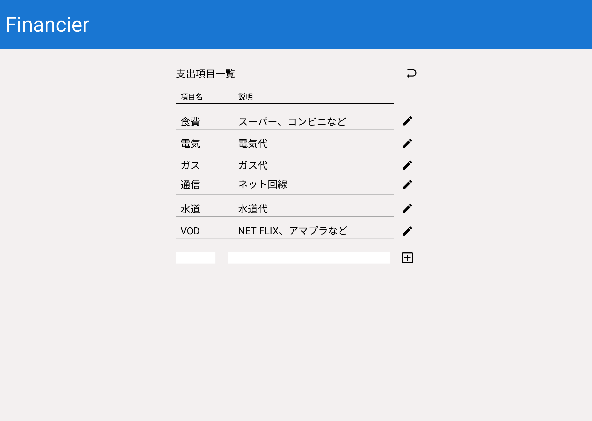

項目設定画面¶
項目設定画面の要件について記す。
機能と配置¶
支出項目を登録管理する。
「支出項目一覧」という見出しと、「支出情報操作画面へ戻るボタン」を左右に配置する
「支出項目テーブル」を中央に配置する。
「支出項目テーブル」のヘッダー(項目名/説明)は登録情報0件の場合でも表示する。
「支出項目テーブル」のヘッダーの下部に登録された情報を表示する。(登録情報0件の場合は表示なし)
登録された情報の右側にペンアイコンの「支出項目編集ボタン」を配置する。
「支出項目テーブル」の下部に登録情報(項目名/説明)を入力するための「支出項目登録フォーム」を配置する。
「支出項目登録フォーム」の右側にプラス(＋)アイコンの「支出項目登録ボタン」を配置する。
使用するAPI¶
categoty [GET] [POST] [PUT]
デザイン¶

パーツごとの詳細仕様¶
支出項目テーブル
Figma英名...category_table
HTMLタグ...<table>他
データ取得...category [GET]
役割
登録された支出項目を表示する。
仕様
支出項目を表形式で表示する。
表示項目は
項目名
説明
支出項目編集ボタン
Figma英名...edit_category_button
HTMLタグ...<button>
役割
支出項目を編集するモーダルウィンドウを開く。
仕様
「支出項目テーブル」の各行に設けられる。
アクション
押下時、該当行のデータを編集するモーダルウィンドウを開く。
支出項目登録フォーム
Figma英名...post_category_form
HTMLタグ...<form>
データ登録...category [POST]
役割
「支出項目表」に表示される1行あたりのデータを登録するためのフォーム。
以下のパーツで構成される。支出項目名入力ボックス
Figma英名...category_name_input
HTMLタグ...<input type="text">役割
支出項目名を入力する。
仕様
入力必須。
支出項目説明入力ボックス
Figma英名...category_description_input
HTMLタグ...<input type="text">役割
支出項目の説明を入力する。
仕様
入力は任意。
支出項目登録ボタン
Figma英名...category_submit_button
HTMLタグ...<button>役割
「支出項目登録フォーム」に入力した内容を支出情報として登録する。
仕様
フォームの入力に誤りがない場合に使用可能となる。
アクション
押下後、入力内容をAPIの仕様に従って調整し、登録を行う。
支出項目編集フォーム
Figma英名...edit_category_form
HTMLタグ...<form>
データ登録...category [PUT]
役割
登録済みの支出項目の編集を行う。
仕様
「支出項目編集ボタン」押下時に、モーダルウィンドウで表示する。
「支出項目名入力ボックス」と「支出項目説明入力ボックス」と同じ入力パーツを持つ。
登録済みの内容を入力パーツの初期値として引き継ぎ表示する。
支出項目変更ボタン
Figma英名...update_category_button
HTMLタグ...<button>
主な役割
「支出項目編集フォーム」に入力した内容に変更して登録する。
仕様
フォームの入力に誤りがない場合に使用可能となる。
アクション
押下後、入力内容をAPIの仕様に従って調整し、登録を行う。
操作・CGI¶
ページ遷移
ユーザーの操作でこの「項目設定画面」へ遷移
サーバーに対し、以下のAPIでリクエストを行う
category [GET]
正常終了時、2に対するレスポンスが返される
レスポンスデータをもとに
category_tableを描画
支出項目登録
「支出項目登録ボタン」の押下
入力された支出項目情報をもとにcategory [POST]を使用し支出情報を登録する
正常終了時、後続の処理へ進む
category [GET]を使用し、支出項目全件を取得
正常終了時、支出項目がレスポンスされる
取得情報をもとに「支出項目テーブル」を更新
支出項目変更
「支出項目変更ボタン」の押下
入力された支出項目情報をもとにcategory [PUT]を使用し支出情報を登録する
正常終了時、後続の処理へ進む
category [GET]を使用し、支出項目全件を取得
正常終了時、支出項目がレスポンスされる
取得情報をもとに「支出項目テーブル」を更新